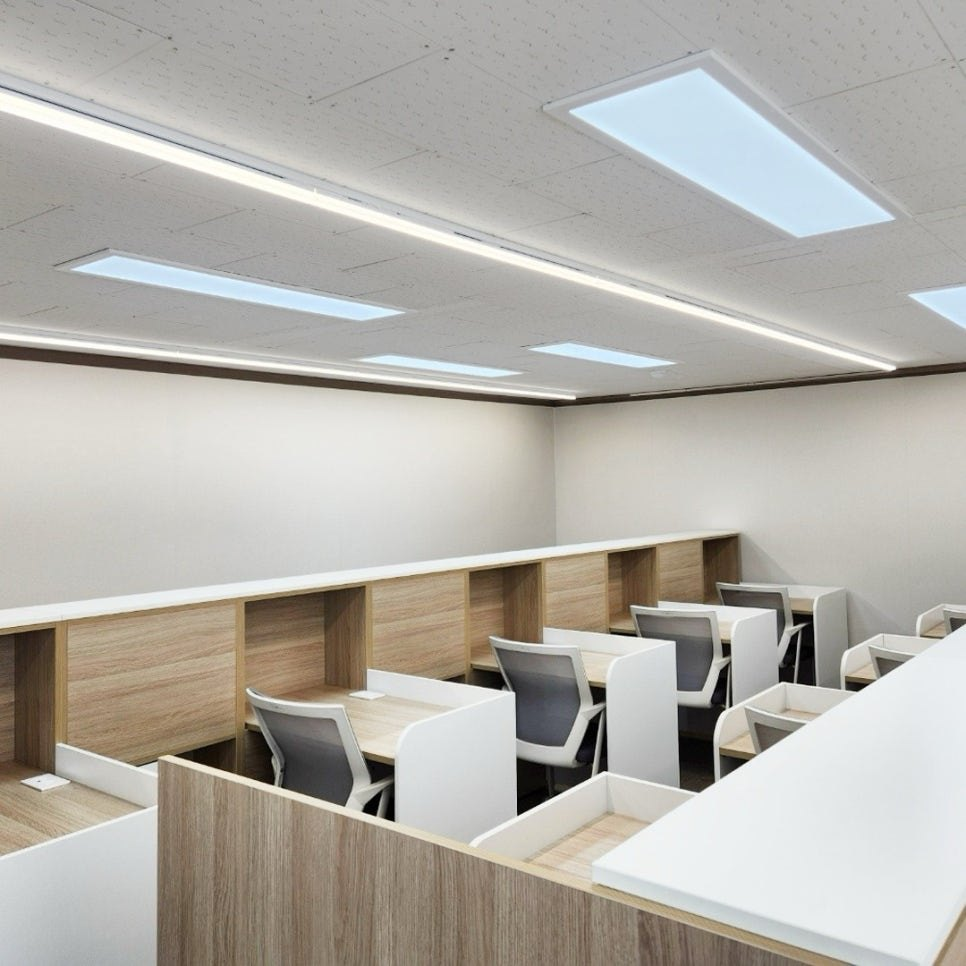
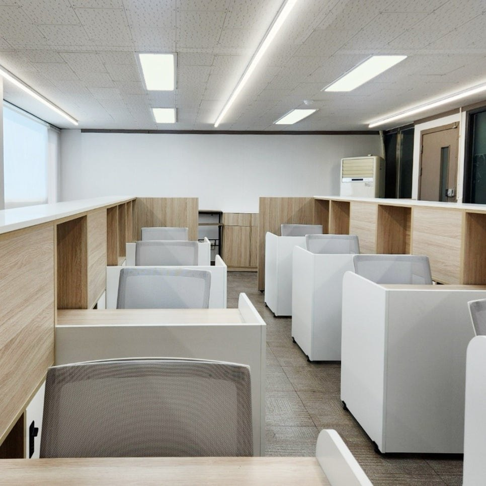

공간
수험생만 있는 조용한 16석
전문자격증을 목표로 하는 성인 학습자만 받습니다. 같은 목표를 가진 사람들 사이에서 공부합니다.
- 30일 고정석과 개인 락커
- 24시간 운영
- 모든 좌석에서 계산기 자유 사용
- 개인별 맞춤 조명과 책상
전문직 시험을 준비하는 성인 수험생 16명만 쓰는 지정좌석 독서실. 회계사·세무사 수험생에게는 현직 회계사·세무사의 특별 멘토링이 함께합니다.
등록은 7일 써본 뒤에 결정하셔도 됩니다.

실제 열람실혹시 지금
“공부는 하고 있는데,
제대로 하고 있는 걸까?”
월요일에 세운 계획이 수요일이면 무너집니다. 누가 확인해 주지 않으니 다시 세우는 것도 미루게 됩니다.
한 문제에 한 시간을 쓰고도 이해가 안 됩니다. 인강 게시판 답변은 며칠 뒤에야 옵니다.
옆자리는 날마다 바뀌고, 계산기 소리에 눈치가 보입니다. 집중할 자리를 찾는 데 힘을 씁니다.
공부가 부족해서가 아닙니다. 혼자 관리하고 있어서입니다.
왜 유신경영아카데미인가
공간, 관리, 멘토링. 장기 수험생활을 줄이는 데 필요한 세 가지를 한곳에 모았습니다.
공간
전문자격증을 목표로 하는 성인 학습자만 받습니다. 같은 목표를 가진 사람들 사이에서 공부합니다.
관리
오늘 나왔는지, 계획대로 가고 있는지 저희가 확인합니다. 공부에만 힘을 쓰세요.
멘토링
회계사·세무사 수험생 전용. 현직 회계사·세무사가 상주하며 질문에 바로 답합니다.
정원 16명
일일회원을 받지 않습니다. 매일 같은 자리에 앉고, 매일 같은 사람들이 옆에서 공부합니다. 한 사람 한 사람의 진도와 출결을 직접 챙길 수 있는 인원만 받기 때문입니다.
정원이 차면 등록을 받지 않습니다. 자리가 있는지는 상담으로 확인해 주세요.
비교해 보세요
| 일반 독서실 · 스터디카페 | 유신경영아카데미 | |
|---|---|---|
| 이용자 | 누구나, 일일 이용자 포함 | 전문직 시험 성인 수험생 16명 |
| 좌석 | 올 때마다 바뀌는 자리 | 30일 고정석과 락커 |
| 계산기 | 소리 때문에 눈치 | 모든 좌석에서 자유롭게 |
| 학습 관리 | 스스로 | 출결·전자기기·학습 계획 관리 |
| 질문 | 물어볼 곳이 없음 | 현직 회계사·세무사에게 바로 |
멘토
현직 회계사와 세무사가 상주하며 학습을 직접 관리합니다. 상세 이력은 곧 공개됩니다.
공인회계사 · 활동명 유신 회계사
이력 준비 중
세무사 · 함택스세무회계 대표세무사
경력 · 자문
학력
공간
2호선·신분당선 강남역 4번 출구에서 541m. 하루 열 시간을 앉아 있어도 버틸 수 있는 자리로 만들었습니다.

이용 요금
두 가지 반 모두 30일 고정석과 락커가 포함됩니다.
자리와 관리가 필요한 모든 전문직 수험생
30일 · 이벤트 가격 · 하루 약 8,300원
막힐 때마다 바로 물어보고 싶은 분
30일 · 이벤트 가격 · 하루 약 11,700원
시작하는 방법
신청서나 카카오톡, 전화로 연락 주세요. 준비하는 시험과 현재 진도를 알려주시면 됩니다.
실제 좌석에서 일주일 동안 공부해 보세요. 분위기와 관리 방식을 직접 확인합니다.
마음에 들면 기본 관리반과 프리미엄 관리반 중에서 골라 등록합니다.
CPA · CTA 온라인 공부 PT
“열심히 하세요”로 끝내지 않습니다. 이번 주에 어디까지 해야 하는지, 지금 진도가 적절한지, 문제풀이 비중은 어떻게 가져갈지 현직 회계사가 구체적으로 함께 점검합니다.
현재 진도와 목표에 맞춘 계획 수립
공부시간, 진도, 문제풀이까지 확인
계획 대비 진행 분석, 다음 주 방향 제시
학습 데이터로 정리한 월간 학습 리포트
과목별 학습 전략과 효율적인 공부법
주 1회, 일대일로 진행
학습설명회
회계사/세무사 시험 필승 합격 전략 설명회
2026년 10월 19일 (월)
19시 · 약 1시간
유신경영아카데미 · 유경민 회계사, 함석환 세무사 진행
설명회 참가 신청참가 전에 미리 방문 예약이나 문의를 남겨주세요.
자주 묻는 질문
네. 7일 동안 무료로 이용해 보고 결정하실 수 있습니다.
일일회원은 받지 않습니다. 16명 지정좌석제로만 운영해 학습 분위기를 지킵니다.
네. 변리사, 감정평가사, 노무사 등 전문자격시험을 준비하는 성인 수험생이면 이용할 수 있습니다. 다만 질문–해결 시스템과 무한 질문은 회계사·세무사 수험생 전용입니다.
24시간 운영합니다.
모든 좌석에서 자유롭게 쓰실 수 있습니다.
프리미엄 관리반은 기본 관리반의 내용에 더해 회계/세법 등 학습 내용을 횟수 제한 없이 질문할 수 있습니다.
3개월 이상 등록하시면 10% 할인됩니다.
상담 및 문의
편한 채널로 연락 주세요. 준비하는 시험과 현재 상황을 알려주시면 맞춰서 안내드립니다.
오시는 길
서울 강남구 논현로79길 62 505호
5층 · 강남역과 역삼역 사이
2신분당강남역 4번 출구에서 541m